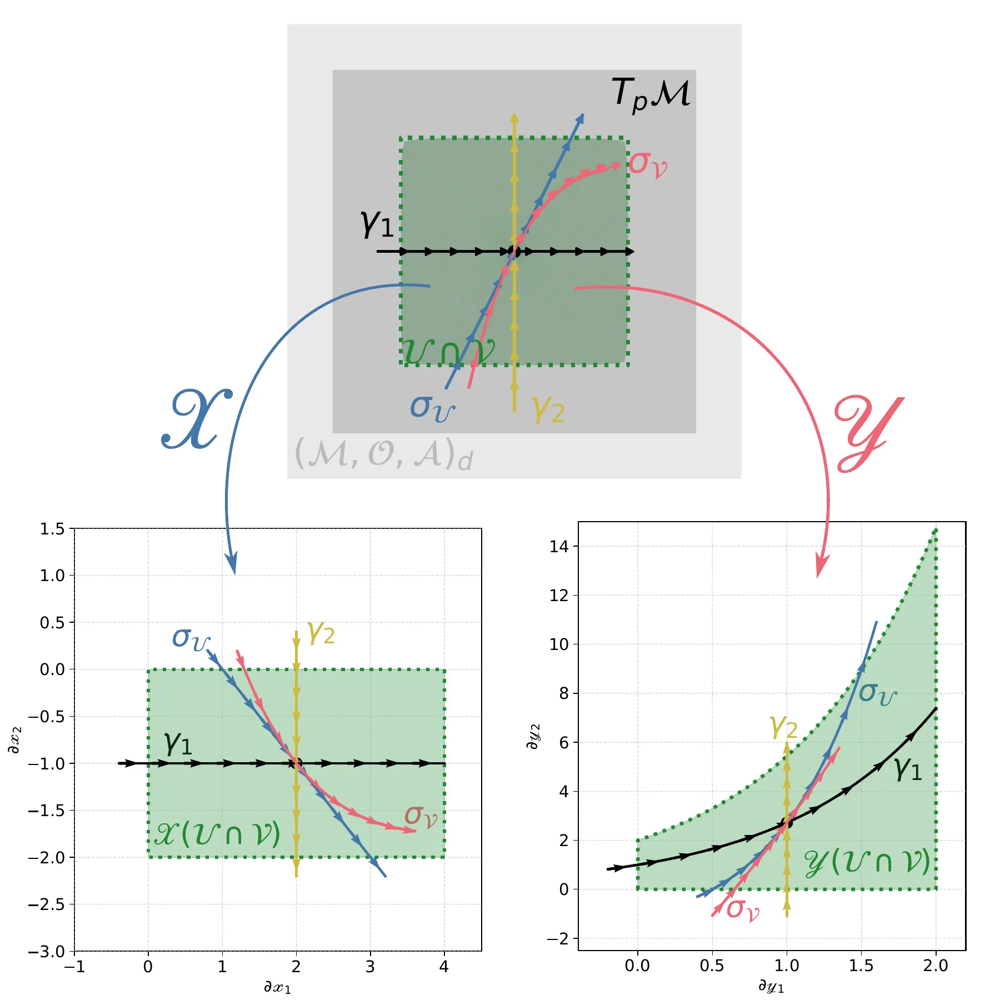

C.3 Example of Tangent, Cotangent and Tensor Spaces (§§4.1–4.3)
Appendix C • Examples
C.3 Example of Tangent, Cotangent and Tensor Spaces (§§4.1–4.3)

Consider the 2-dim. (topological) manifold \(\left( \mathcal{M}, \mathcal{O}_{\mathcal{M}}, \mathcal{A} \right)_2\), with \(\mathcal{M} \coloneqq \mathbb{R}^2\) and \(\mathcal{O}_{\mathcal{M}} \coloneqq \mathcal{O}_{\mathbb{R}^2}\) the standard topology. We denote generic points of the manifold by \(q = (q_1, q_2) \in \mathcal{M}\), reserving the letter \(p\) for the specific point introduced below. The atlas \(\mathcal{A}\) is formed by the two charts: \[ \mathcal{A} \coloneqq \left\lbrace \begin{array}{c@{\quad} | @{\quad} c} \textbf{Chart $(\mathcal{U}, \mathscr{X})$} & \textbf{Chart $(\mathcal{V}, \mathscr{Y})$} \\[6pt] \begin{aligned} \mathcal{U} &\coloneqq \mathcal{M} \\ \mathscr{X} \colon \mathcal{U} &\longrightarrow \mathscr{X}(\mathcal{U}) = \mathbb{R}^2 \\ q &\longmapsto \mathscr{X}(q) \coloneqq (2 q_1, -q_2) \end{aligned} & \begin{aligned} \mathcal{V} &\coloneqq \mathcal{M} \\ \mathscr{Y} \colon \mathcal{V} &\longrightarrow \mathscr{Y}(\mathcal{V}) = \mathbb{R}^2 \\ q &\longmapsto \mathscr{Y}(q) \coloneqq (q_1, q_2 e^{q_1}) \end{aligned} \end{array} \right\rbrace \] Both chart domains cover the whole manifold, hence \(\mathcal{U} \cap \mathcal{V} = \mathcal{M}\). Both chart maps are homeomorphisms w.r.t. the standard topologies, with continuous inverse chart maps: \[ \begin{aligned} &\begin{array}{c} \begin{aligned} \mathscr{X}^{-1} \colon \mathscr{X}(\mathcal{U}) &\longrightarrow \mathcal{U} \\ (\alpha_1, \alpha_2) &\longmapsto \mathscr{X}^{-1}(\alpha_1, \alpha_2) = (\alpha_1/2, -\alpha_2) \end{aligned} \end{array} \quad &\begin{array}{c} \begin{aligned} \mathscr{Y}^{-1} \colon \mathscr{Y}(\mathcal{V}) &\longrightarrow \mathcal{V} \\ (\beta_1, \beta_2) &\longmapsto \mathscr{Y}^{-1}(\beta_1, \beta_2) = (\beta_1, \beta_2 e^{-\beta_1}) \end{aligned} \end{array} \end{aligned} \]
The atlas \(\mathcal{A}\) is \(C^\infty\)-compatible, since both chart transition maps are built from polynomials and exponentials, hence \(C^\infty\) in the ordinary multivariable calculus sense: \begin{align*} \textrm{\runic ᛖ}_{\mathcal{V}\mathcal{U}} \colon \mathscr{Y}(\mathcal{U} \cap \mathcal{V}) &\longrightarrow \mathscr{X}(\mathcal{U} \cap \mathcal{V}) \\ (\beta_1, \beta_2) &\longmapsto \textrm{\runic ᛖ}_{\mathcal{V}\mathcal{U}}(\beta_1, \beta_2) \coloneqq \left( \mathscr{X} \circ \mathscr{Y}^{-1} \right)(\beta_1, \beta_2) = (2\beta_1, -\beta_2 e^{-\beta_1}), \\[6pt] \textrm{\runic ᛖ}_{\mathcal{U}\mathcal{V}} \colon \mathscr{X}(\mathcal{U} \cap \mathcal{V}) &\longrightarrow \mathscr{Y}(\mathcal{U} \cap \mathcal{V}) \\ (\alpha_1, \alpha_2) &\longmapsto \textrm{\runic ᛖ}_{\mathcal{U}\mathcal{V}}(\alpha_1, \alpha_2) \coloneqq \left( \mathscr{Y} \circ \mathscr{X}^{-1} \right)(\alpha_1, \alpha_2) = (\alpha_1/2, -\alpha_2 e^{\alpha_1/2}). \end{align*} Therefore \(\mathcal{A} \equiv \mathcal{A}_{C^\infty}\), and \(\left( \mathcal{M}, \mathcal{O}_{\mathcal{M}}, \mathcal{A}_{C^\infty} \right)_2\) is a 2-dim. smooth manifold.
Now consider the following two curves on the manifold: \[ \begin{aligned} &\begin{array}{c} \begin{aligned} \gamma_1 \colon \mathbb{R} &\longrightarrow \mathcal{M} \\ \lambda &\longmapsto \gamma_1(\lambda) \coloneqq (\lambda, 1) \end{aligned} \end{array} \quad &\begin{array}{c} \begin{aligned} \gamma_2 \colon \mathbb{R} &\longrightarrow \mathcal{M} \\ \lambda &\longmapsto \gamma_2(\lambda) \coloneqq (1, 2\lambda). \end{aligned} \end{array} \end{aligned} \] Both curves pass through the point \(p \coloneqq (1,1) \in \mathcal{M}\): \(\gamma_1(\lambda_1) = p\) at \(\lambda_1 \coloneqq 1\), and \(\gamma_2(\lambda_2) = p\) at \(\lambda_2 \coloneqq 1/2\) (see Figure C.4). Their chart representatives, together with the coordinates of \(p\) in each chart, are: \[ \begin{aligned} &\begin{array}{c} \begin{aligned} (\mathscr{X} \circ \gamma_1)(\lambda) &= (2\lambda, -1) \\ (\mathscr{Y} \circ \gamma_1)(\lambda) &= (\lambda, e^{\lambda}) \end{aligned} \end{array} \qquad &\begin{array}{c} \begin{aligned} (\mathscr{X} \circ \gamma_2)(\lambda) &= (2, -2\lambda) \\ (\mathscr{Y} \circ \gamma_2)(\lambda) &= (1, 2e\lambda) \end{aligned} \end{array} \qquad &\begin{array}{c} \begin{aligned} \mathscr{X}(p) &= (2, -1) \\ \mathscr{Y}(p) &= (1, e) \end{aligned} \end{array} \end{aligned} \]
We can explicitly add these curves in each chart, i.e., by adding their chart representatives component-wise in \(\mathbb{R}^2\). Recall that a manifold carries no notion of addition of its points: even though \(\mathcal{M} = \mathbb{R}^2\) here, the vector-space structure of \(\mathbb{R}^2\) is not part of \(\left( \mathcal{M}, \mathcal{O}_{\mathcal{M}}, \mathcal{A}_{C^\infty} \right)_2\), and we deliberately ignore it. We define the curves \(\sigma_{\mathcal{U}}\) and \(\sigma_{\mathcal{V}}\) through their chart representatives in \((\mathcal{U}, \mathscr{X})\) and \((\mathcal{V}, \mathscr{Y})\), respectively: \begin{align*} (\mathscr{X} \circ \sigma_{\mathcal{U}})(\lambda) &\coloneqq (\mathscr{X} \circ \gamma_1)(\lambda_1 + \lambda) + (\mathscr{X} \circ \gamma_2)(\lambda_2 + \lambda) - \mathscr{X}(p) \\ &= (2 + 2\lambda, -1) + (2, -1 - 2\lambda) - (2, -1) = (2\lambda + 2, -2\lambda - 1), \\[6pt] (\mathscr{Y} \circ \sigma_{\mathcal{V}})(\lambda) &\coloneqq (\mathscr{Y} \circ \gamma_1)(\lambda_1 + \lambda) + (\mathscr{Y} \circ \gamma_2)(\lambda_2 + \lambda) - \mathscr{Y}(p) \\ &= (1 + \lambda, e^{1 + \lambda}) + (1, e + 2e\lambda) - (1, e) = (\lambda + 1, e^{\lambda + 1} + 2e\lambda). \end{align*} Subtracting \(\mathscr{X}(p)\) (resp. \(\mathscr{Y}(p)\)) ensures that both curves pass through \(p\) at \(\lambda_0 = 0\). Mapping these chart-level curves back to the manifold with the inverse chart maps, we explicitly observe that they differ: \begin{align*} \sigma_{\mathcal{U}}(\lambda) &= \mathscr{X}^{-1}\big( (\mathscr{X} \circ \sigma_{\mathcal{U}})(\lambda) \big) = (\lambda + 1, 2\lambda + 1) \longrightarrow \sigma_{\mathcal{U}}'(\lambda) = (1, 2), \\ \sigma_{\mathcal{V}}(\lambda) &= \mathscr{Y}^{-1}\big( (\mathscr{Y} \circ \sigma_{\mathcal{V}})(\lambda) \big) = (\lambda + 1, 1 + 2\lambda e^{-\lambda}) \longrightarrow \sigma_{\mathcal{V}}'(\lambda) = \big( 1, 2e^{-\lambda}(1 - \lambda) \big). \end{align*}
However, what does not depend on the chart is the velocity of these curves at \(p\), i.e., the vector they define in \(T_p\mathcal{M}\). Let us explicitly check this. For any scalar field \(f \in C^\infty(\mathcal{M})\) we have1: \begin{align*} v_{\sigma_{\mathcal{U}}, p}(f) &\coloneqq (f \circ \sigma_{\mathcal{U}})'(0) = \sum_{i=1}^{2} (\sigma_{\mathcal{U}})_i'(0) \cdot \partial_i f\big( \sigma_{\mathcal{U}}(0) \big) = \partial_1 f(1,1) + 2 \cdot \partial_2 f(1,1), \\[6pt] v_{\sigma_{\mathcal{V}}, p}(f) &\coloneqq (f \circ \sigma_{\mathcal{V}})'(0) = \sum_{i=1}^{2} (\sigma_{\mathcal{V}})_i'(0) \cdot \partial_i f\big( \sigma_{\mathcal{V}}(0) \big) = \partial_1 f(1,1) + 2 \cdot \partial_2 f(1,1), \\[6pt] \big( v_{\gamma_1, p} \oplus_T v_{\gamma_2, p} \big)(f) &\coloneqq v_{\gamma_1, p}(f) + v_{\gamma_2, p}(f) = (f \circ \gamma_1)'(\lambda_1) + (f \circ \gamma_2)'(\lambda_2) \\ &= \sum_{i=1}^{2} (\gamma_1)_i'(\lambda_1) \cdot \partial_i f\big( \gamma_1(\lambda_1) \big) + \sum_{i=1}^{2} (\gamma_2)_i'(\lambda_2) \cdot \partial_i f\big( \gamma_2(\lambda_2) \big) \\ &= \big( 1 \cdot \partial_1 f(1,1) + 0 \cdot \partial_2 f(1,1) \big) + \big( 0 \cdot \partial_1 f(1,1) + 2 \cdot \partial_2 f(1,1) \big) \\ &= \partial_1 f(1,1) + 2 \cdot \partial_2 f(1,1). \end{align*} Since this holds \(\forall f \in C^\infty(\mathcal{M})\), we conclude: \[ v_{\sigma_{\mathcal{U}}, p} = v_{\sigma_{\mathcal{V}}, p} = v_{\gamma_1, p} \oplus_T v_{\gamma_2, p}. \] That is, the curve realizing the sum \(v_{\gamma_1, p} \oplus_T v_{\gamma_2, p}\) depends on the chart used to construct it, but the element of \(T_p\mathcal{M}\) it defines does not (cf. Appendix B.4).
Since \(\mathcal{M} = \mathbb{R}^2\), any \(f \in C^\infty(\mathcal{M})\) is also a function \(f \colon \mathbb{R}^2 \to \mathbb{R}\) that is smooth in the ordinary multivariable calculus sense: \(f = (f \circ \mathscr{X}^{-1}) \circ \mathscr{X}\) is a composition of ordinarily smooth maps (equivalently, \(\mathcal{A} \cup \{ (\mathcal{M}, \mathrm{id}_{\mathbb{R}^2}) \}\) is still a \(C^\infty\)-compatible atlas). The same holds for the curves, viewed as maps \(\mathbb{R} \to \mathbb{R}^2\). We can therefore apply the multivariable chain rule directly to \(f \circ \sigma \colon \mathbb{R} \to \mathbb{R}\), where \(\partial_i f\) denotes the ordinary partial derivative of \(f\) w.r.t. its \(i\)-th entry, and \((\sigma)_i'\) the derivative of the \(i\)-th component of \(\sigma\).